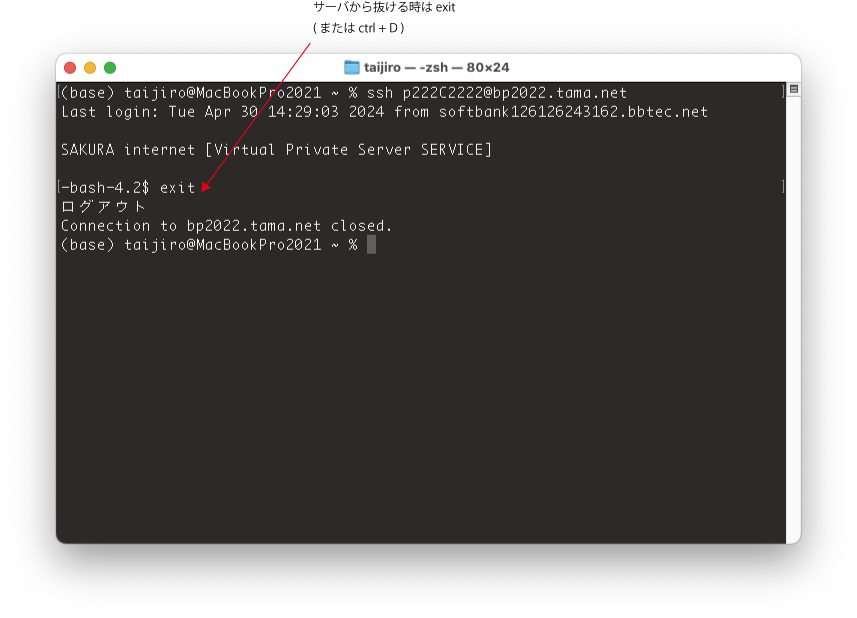
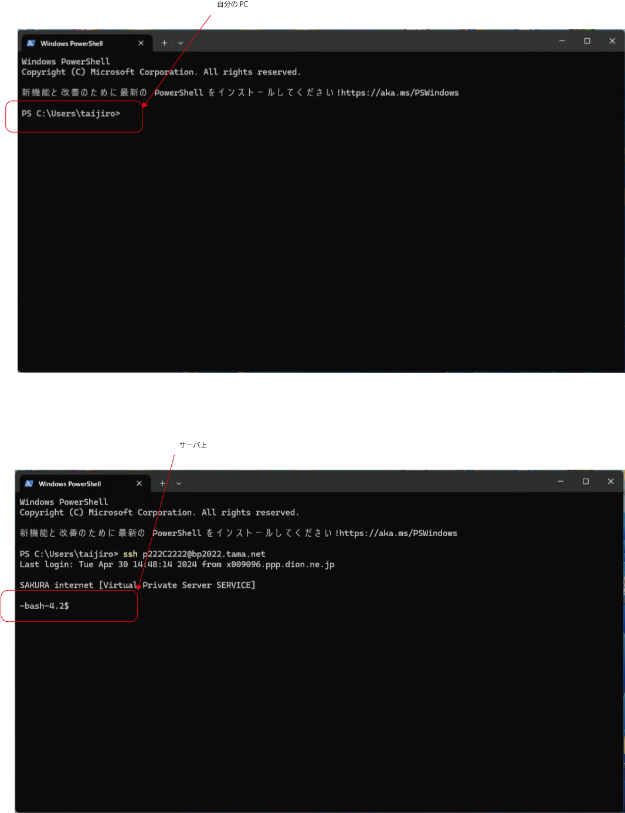
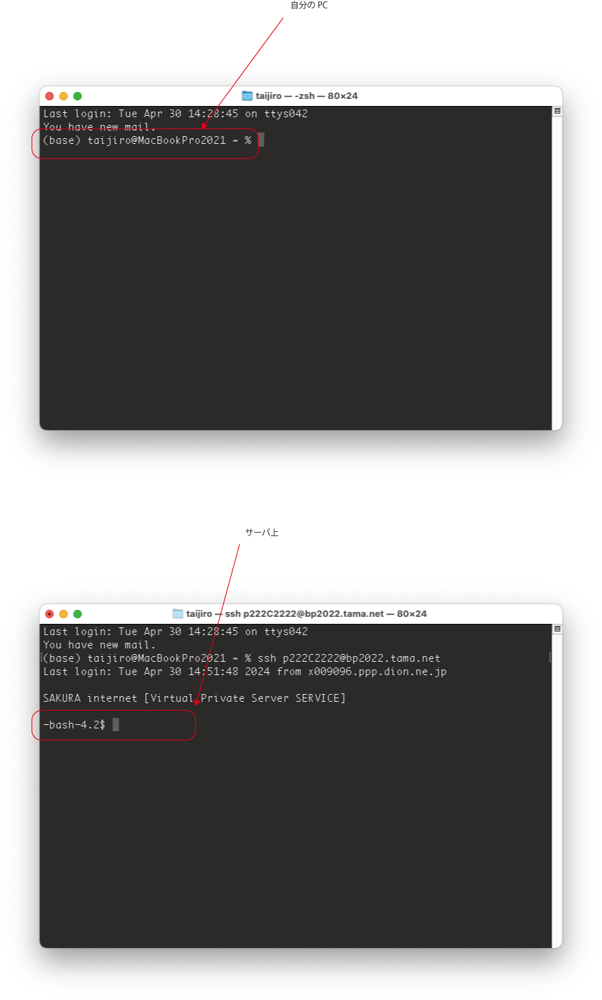

ビジネス プログラミング 2024
山本泰二郎 (
yamamoto_t@obirin.ac.jp
)
ディレクトリ構造の理解、
ターミナルを使ったファイル操作
第2回 4月30日(火) 5限 (16:50〜18:30) J402
今日の内容
先週のやり残し(VS Codeの設定)
コンピューターのファイル構造
サーバ上のファイルやディレクトリを、コマンドで操作してみる
サーバから抜ける時

今、自分が作業しているのは、自分のPCなのかサーバなのか (Windows)

今、自分が作業しているのは、自分のPCなのかサーバなのか (Mac)
